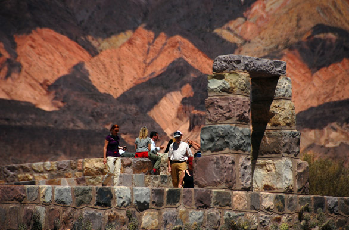

Tilcara
Qué visitar: Pucara, Garganta del Diablo, Cuevas de Waira (guía), Castillos de Huichaira (guía).
Qué visitar: Pucara, Garganta del Diablo, Cuevas de Waira (guía), Castillos de Huichaira (guía).

Qué visitar: Mirador Cuesta de Lipán. Mirador 4.170 msn. Salinas Grandes. Ojitos de agua (con guía).
Cómo llegar: Desde la terminal de Purmamarca tomar una combie o remis compartido a las Salinas. En auto: a 65 km de Purmamarca por la RN52. Excursión.
Qué visitar: Mirador serranías del Hornocal.
Cómo llegar: Desde la terminal de Humahuaca tomar una camioneta 4x4 hasta las serranías del Hornocal. En auto: a 23 km de Humahuaca por la RP 73. Excursión.
Qué visitar: Mirador Cerro 7 colores, Paseo de los colorados.
Cómo llegar: En ómnibus: desde la terminal de Tilcara hasta la terminal de Purmamarca. En auto: a 25 km de Tilcara por RN9 9 hasta la intersección con la RN 52 la cual llega hasta Purmamarca. Excursión.
Qué visitar: Pucara de Juella.
Cómo llegar: En remis. En auto: a 9 km de Tilcara por la RN9 dirección norte.
Qué visitar: Monumento a los Héroes de la Independencia, Centro histórico.
Cómo llegar: En ómnibus: desde la terminal de Tilcara hasta la terminal de Humahuaca. En auto: a 45 km de Tilcara por la RN9 dirección norte. Excursión.